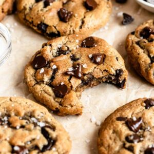

The Best, No Butter, Chocolate Chip Cookies Ever

Description
I hate when recipe websites contain an individuals entire life story before getting to the juice, the reason you are here, the recipe.
Let's cut right to it. This is a recipe for Chocolate Chip Cookies with no butter. Enjoy!
Ingredients
- 1/2 cup Olive Oil. Olive oil gives a lighter taste opposed to other oils.
- 3/4 cup Brown Sugar, dark or light
- 1/4 cup Granulated Sugar. I use Sugar in the Raw but use your favorite or what you have on hand.
- 1/2 teaspoon Sea Salt
- 2 teaspoons Vanilla Bean Paste. Vanilla extract works here as well.
- 1 teaspoon Fresh Ground Coffee. Fresh ground is best but already ground coffee will work, the higher quality coffee the better the taste. For those coffee haters, this will NOT make your cookies taste like coffee.
- 1 Large Egg
- 1 Egg Yolk
- 1 2/3 cup Flour
- 1 teaspoon Baking Soda
- 1 cup Chocolate Chips
Steps
- Preheat oven to 180c or 350f
- Into a large mixing bowl, add the olive oil, granulated sugar, brown sugar, coffee, vanilla bean paste, and sea salt. Mix with a whisk until combined.
- Add the egg and egg yolk and mix until well combined.
- Add the flour, and add the baking soda, and mix until almost combined.
- Add the chocolate chips and mix until just combined. Don't over mix! Let the dough rest in the fridge for at least 1/2 an hour, best if you can let it rest overnight but half an hour works fine.
- Place the cookie dough balls onto a parchment paper-lined baking sheet, top with more chocolate chips, and bake in preheated oven for 9-11 minutes. Let the cookies cool for 5 minutes, and then transfer them to a wire rack to cool completely. If you are like me and lack patience, let them cool for about 10 minutes after transferring to the rack and dig in.
- Serve with milk or coffee for the best experience!
Nutrition
Come on, you know they aren't good for you. They are great for your taste buds though.